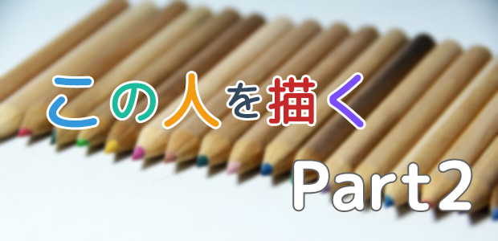
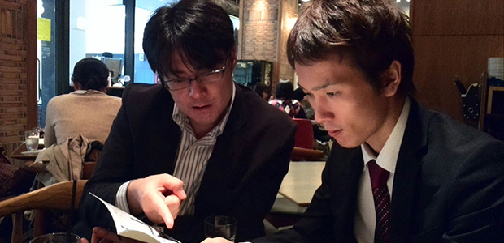
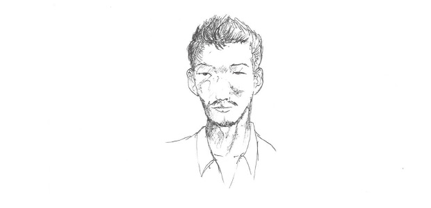
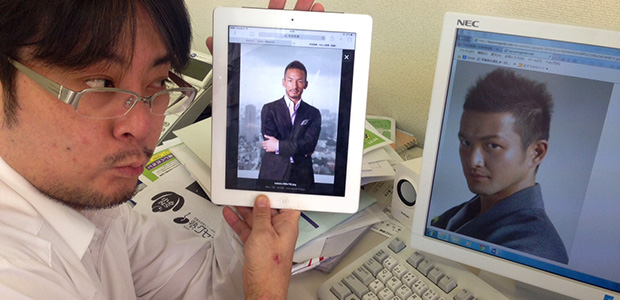

誰しも、自分が日々接する人──例えば家族、または学校や職場の仲間など──の中に、愛すべき味のある人物がいるのではないでしょうか？
このシリーズでは、私にとってそのような人物を、私というフィルターを通して描き、なおかつ今度は視点を切り替えて客観的に再認識していくというコーナーです。
ただし、読んで下さっている皆さんにはわからない場合もありますので、その人と似ている有名人の写真も添えて解説していきたいと思います。
ARCS ホームページ支配人を描く
我が研究所のHP支配人を見ていると非常に面白い。
研究員ではないのであえて前面には出ない（本人談）とのことなので、若手でクール、そして愛妻家とだけ言っておきましょう。
弊社のHPの管理を一手に引き受けている彼。仕事に対するこだわりや技術は相当のもの。

「俺は最も美しいcodeを書く」という彼の言葉に、私は強いプロ意識を感じました。
（※コードとは、ホームページの文字や画像の配置や色、どこをクリックしてどこに飛ぶか、などを決めるプログラムのこと）
一見するとコワモテなのですが、話してみるとかなり気さくでバカ話もできる。
そして若い割にはかなり自然な社交辞令（笑）も心得ていて、なかなか面白い人物だなと。
仕事の終わりに一緒に食事をする機会も多く接している時間が長いのですが、ふと改めて彼を描いてみたいと思いました。

スリム。
するどく男臭い眼光。
生やしたり剃ったりしている髭。
この表情は、やや毒のあるユーモアを発する直前の瞬間を切り取ったものです。
さて恒例ですが、彼に類似している人を有名人の中から探してみたいと思います。
系統としては、EX○LEとか三代目ナニガシなどのメンバーにいそうな気がして色々と探してみたのですが、意外といない！
そこでピンときたのは、サッカー界のレジェンドのあのお方。
ということで決まりかけた瞬間、うちのスタッフから一言。
「少しふっくらさせたら歌舞伎界のあの人に似てるかも」

ほほう、確かにそうかもね。
お二方ともHP支配人と同じく、プロ意識がすごい。
自分の仕事に対してストイックに探求していくところが共通点ですね。
では、またこのコーナーでお会いしましょう！